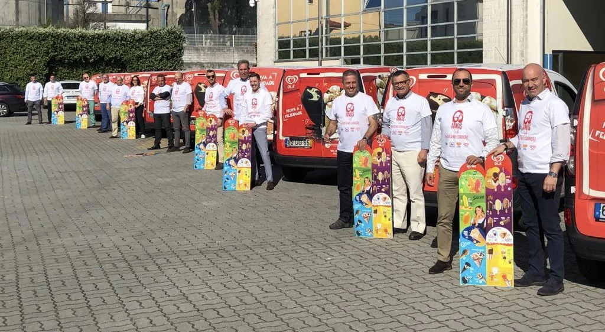

O início em Matosinhos
Início da atividade com a concessão para o concelho de Matosinhos.
A empresa
O ano em que começou a Mateus & Martins, na distribuição alimentar em Matosinhos.

Registo da equipa publicado no website oficial
Fundada por Mateus Garcês Moreira e o seu então sócio, a empresa iniciou atividade na sequência da delegação de concessões IgloOlá.
O percurso alargou-se ao retalho tradicional e ao canal Horeca, com produtos congelados e não congelados de várias marcas.
Início da atividade com a concessão para o concelho de Matosinhos.
Aquisição das primeiras instalações próprias na Avenida D. Afonso Henriques, em Matosinhos.
A aquisição da DISOGEL permitiu o alargamento da área comercial ao concelho do Porto.